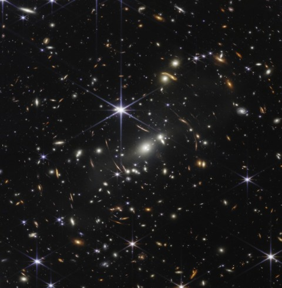
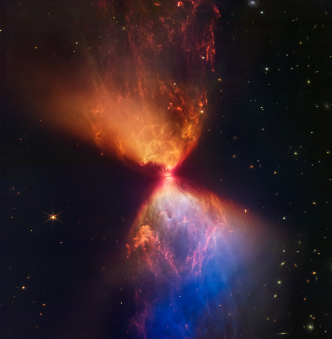
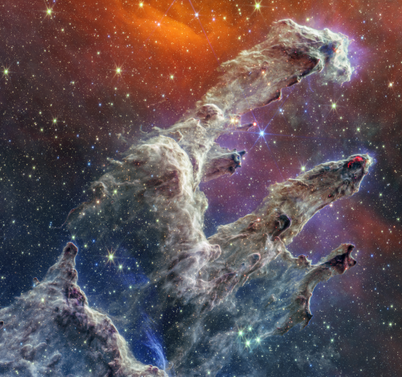

宇宙は恐ろしいが美しい
私たちのちっぽけな目でその美しさを十分に見ることができないのは残念だ
恐ろしくも美しい写真をお見せし、ついでに、「興味深い 」事実もお伝えしよう
JWST, Webb's First Deep Field (NIRCam Image)

JWST, L1527 and Protostar (NIRCam Image)

JWST, Pillars of Creation (NIRCam and MIRI Composite Image)
